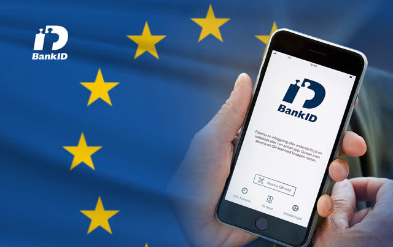
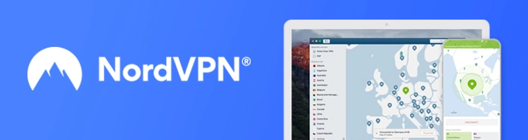
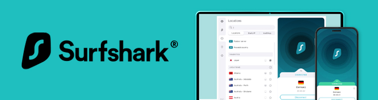
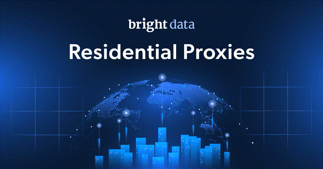
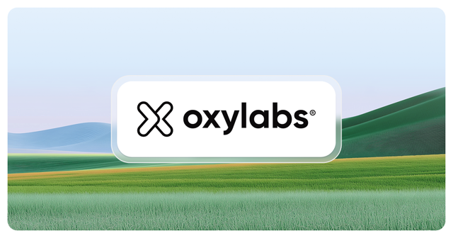
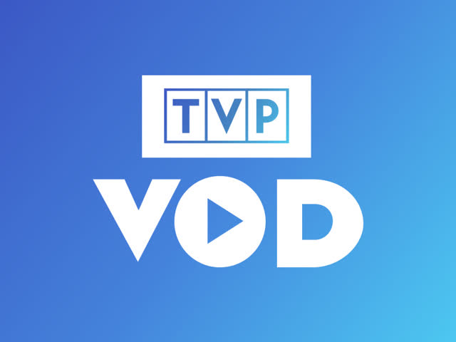

🇵🇱➡️🇸🇪 Polskie IP za granicą — bank szwedzki z Tajlandii + polska TV bez Polonia-tax
⚡ TL;DR — Rekomendacje
Use case 1 — Szwedzki bank + praca z Tajlandii: ✅ vanilla WireGuard hub na Twoim Pi 5 (publiczne IPv4 Telia). Domowy IP residential = nieodróżnialny od logowania z domu (żadnych flag w MaxMind/IP2Proxy — cytat w sekcji 🏦). BankID nie sprawdza GPS przy logowaniu (oficjalnie: GPS tylko przy wydawaniu/przenoszeniu BankID). Warunki: DNS przez tunel, pełny tunel z IPv6, WebRTC w przeglądarce wyłączony/limitowany. Fallback na hotel Wi-Fi: wstunnel (WG przez TCP 443).
Use case 2 — Polsat Box Go / Player / TVP: 🥇 node u rodziny/znajomych w PL (ten sam wg-hub pattern; prawdziwy residential IP — nieodróżnialny, 0 zł/mies). 🥈 komercyjny VPN z PL (od $1.75/mies; działa 2026-11 wg streamfix dla 4/7 testowanych; krucho — detekcja zmienna). 🥉 kupione residential proxy PL ($1.80–4.20/IP — ale flagowane w bazach RES; Bright Data i Oxylabs odpadają przez ToS). 📦 legalny baseline: pakiet Polonia 10 €/30 dni (okrojony — 18 kanałów, bez TVN/TVP/sportu) lub portability UE dla czasowych pobytów.
„Społeczność użyczania łącza” NIE istnieje — żadnej platformy wymiany IP nie znaleziono (3 niezależne query; jedyna realna forma: prywatny barter z zaufanymi — WireGuard/Tailscale exit share). VPN Gate: 0 polskich relayów w live feed (zmierzone API 2026-11-19).
🏦 Use case 1: Bank SE + praca z Tajlandii przez hub w domu

BankID — oficjalne stanowisko
GPS tylko przy wydawaniu nowego BankID / przenoszeniu między urządzeniami („location services is only mandatory when you get a new BankID…”). Przy logowaniu i podpisywaniu — zero wymogu lokalizacji. BankID wpisany do EU Official Journal (eIDAS) — użycie z zagranicy to wspierany scenariusz.
Detekcja IP — dlaczego domowy exit wygrywa
MaxMind (silniki fraudowe banków): hosting provider = „the end-user is probably using a VPN, even if we have not otherwise identified it as such”. Residential ISP = „harder to detect… appear to be associated with legitimate residential ISPs”. Twoje Telia: connection type Cable/DSL, ISP Telia Sverige AB, brak flag DCH/VPN/RES → czysty konsument. VPS w Szwecji jest GORSZY (DCH flaga automatycznie).
Ryzyka realne (nie IP!):
| Ryzyko | Fakty | Fix |
|---|---|---|
| DNS leak | WireGuard „takes zero stance on DNS” — system może pytać tajlandzki resolver; serwis widzi kraj resolvera | DNS = w wg-quick + test dnsleaktest.com; Tailscale exit node robi DNS przez exit domyślnie |
| IPv6 leak | full tunnel 0.0.0.0/0 bez ::/0 = ruch IPv6 poza tunelem | dodaj ::/0 do AllowedIPs (Telia ma IPv6 — hub też) |
| WebRTC leak | STUN ujawnia realny IP stronie JS-owej mimo tunelu | disable WebRTC / uBlock «prevent WebRTC from leaking local IP» |
| Blokada komercyjnego VPN | r/TillSverige: ProtonVPN (NL) — problem przy autoryzacji płatności kartą, nie przy samym BankID; Swedbank+VPN działa u innych | własny hub omija ten problem całkowicie |
| Fraud engine banku | nowe urządzenie/sieć → dodatkowa weryfikacja (nie blokada); Swedbank/SEB/Handelsbanken: zero publikowanych polityk „blokujemy zagranicę” (przejrzane sitemapy — 0 trafień) | jenmó indeks: static IP score — Twoje stałe domowe IP = wysoki score = „ten sam użytkownik” |
| Hotel Wi-Fi Tajlandia | captive portal + często blokada UDP/nietypowych portów (WG 51820 może nie wstać) | fallback: WG na porcie 53/4500 → wstunnel TCP 443; albo router podróżny (GL.iNet) który sam przechodzi portal |
✅ VPNSmith DNS leaks · WebRTC leak · hotel Wi-Fi vs WireGuard · GL.iNet captive portal · VPN w Tajlandii legalny · r/TillSverige case · Tailscale exit nodes (banking = oficjalny use case)
🏆 Use case 2: Opcje polskiej TV z zagranicy — ranking
| Opcja | Koszt/mies | Jakość IP | Ryzyko | Werdykt | |
|---|---|---|---|---|---|
| 1. Node u rodziny/znajomych w PL (vanilla wg na ich routerze — ten sam wzorzec co hub SE) | 0 zł | Prawdziwy residential — nieodróżnialny | zero ToS-proxy; wymaga zaufanej osoby + router z publicznym IP (Orange/Play zwykle OK; CGNAT → outbound pattern jak zawsze) | BEST tańsze i pewniejsze niż wszystko poniżej | |
 | 2. Komercyjny VPN z PL serwerem (Nord/Surfshark/Express/PIA) | $1.75–3.59 | Datacenter M247 itp. — anti-VPN wykrywa, vendorzy odświeżają pool | krucho: „results may change”; Player/PBG detekcja agresywna (Canal+/PBG strictest); ToS PL TV zakazuje | OK tymczasowo streamfix 2026-11: 4/7 działa z Player.pl |
| 3. Kupione residential proxy PL (IPRoyal ISP / Surflare / Rayobyte) | $1.80–4.20/IP | Residential (Orange/Play/Plus/T-Mobile ranges) — ALE flagowane w bazach RES z nazwą vendora | wykrywalne (IP2Proxy PX10 RES, IPinfo „service”: vendor); Bright Data/Oxylabs ToS zakazują streaming | gry wideo tylko jeśli VPN-y przestaną działać | |
| 4. Pakiet Polonia (legalny) | 10 € / 45 zł / $10 (region-dependent — zmierzone z IP SE: 10,00 €) | — | okrojony: 18 kanałów (Polsat 1, News, Disco Polo…), bez TVN/TVP/Eurosport/większości sportu | legalny baseline + portability UE dla czasowych pobytów | |
| 5. Satelita Hot Bird w Sztokholmie | dish ~400–800 zł jednorazowo | — broadcast, zero geo-blokady IP | FTA legalne (TVP Polonia/World/Info, 4Fun, Kanał Zero…); Polsat Box DTH = regulamin wprost zabrania poza PL | dla FTA dobra komplementarna droga | |
| 6. VPN Gate / społeczności wolontariackie | 0 zł | anonimowe relays volunteerów | 0 PL relays w live feed (zmierzone 2026-11-19: 95 relays, JP 50/KR 30); logi ≥3 mies; TCP/25 blocked; rotują | ODPADA | |
| 7. Grass/Honeygain/Pawns/PacketStream | — | supply-side: TY sprzedajesz bandwidth; nie kupisz konkretnego PL IP | brak retail „pick Poland exit” | ODPADA (to rynek dla firm, nie dla widza) |
„Kazik z Poznania użycza łącza”? Platformy wymiany IP między obcymi nie ma (potwierdzone 3 query + analiza rynku). Powody: trust (ktoś robi fraude z Twojego IP = Ty odpowiadasz), DMCA-liability, brak monetizacji. Istnieje tylko prywatny barter między zaufanymi (Ty: exit SE ↔ Kazik: exit PL — wireguard peer swap; idealnie pasuje do huba który i tak budujesz na Pi 5). Znajdź 1 Polaka w Szwecji z rodziną w PL i zróbcie sobie nawzajem peery — 15 minut konfiguracji dla każdego.
🔐 Komercyjne VPN-y z PL — stan 2026-11 (streamfix co tydzień testuje)
NordVPN — ✓ Works (Player.pl)
50–70+ serwerów Warszawa. „consistently unblocked TVP VOD, Polsat Box Go, and Player” — cybernews 2026-05. Od 2,99 €/mies (BF) / 10,99 zł; 30 dni zwrotu. Reddit 2022: „definitely works with player”.

Surfshark — ✓ Works (Player.pl)
Warszawa + Gdańsk. streamfix 2026-11-15: Player.pl ✓. Od $1.78/mies; unlimited devices; 7-dni trial + 30 dni zwrotu.
ExpressVPN — ✓ Works (BEST wg streamfix)
Warszawa, RAM-only, obfuskacja. streamfix 2026-11-15: ✓ „BEST”. Od $2.79/mies; 30 dni zwrotu. Najdroższy premium.
CyberGhost — ~ Partial
Największa flota Warszawa (10 Gbps M247), dedykowana strona „Player.pl abroad”. streamfix 2026-11-14: tylko Partial. Od $1.75/mies; 45 dni zwrotu (najdłuższy trial-refund).
Mullvad — ✗ nie do streamingu
5 relayów wg w Warszawie (API potwierdzone 2026-11-19). Oficjalnie nie wspiera streamingu: „if streaming works it’s accidental” (r/mullvadvpn). 5 € flat — idealny do prywatności, nie do TV.
Proton VPN — ~ Partial
PL tylko premium (free bez PL). streamfix 2026-11-11: Player.pl ~ Partial. Od $3.59/mies. Privacy-first, ale nie streaming-first.
✅ PIA: od $1.79, streamfix 2026-11-16 ✓ Works · ⚠️ PureVPN: marketing „flawless 4K unblocking” (bias afiliacyjny) · ⚠️ PrivateVPN: Comparitech rekomenduje do TVP · 🔴 Windscribe: brak live-potwierdzenia w tym runie
Jak wykrywają: IP-only + listy datacenter subnetów („high-traffic datacenter subnets… blacklisted within minutes” — natchecker); PBG/Canal+ stricter niż TVP; apka Player potrafi zerwać tunel („disrupt your VPN connection” — r/poland 2024) → VPN na routerze (poziom sieci) zamiast apki; cookies/cache pamięta kraj — czyść przed switchem.
🛒 Residential proxy PL — kupno IP na sztuki
| Vendor | PL pool | Cena static PL IP | Streaming w ToS | RES-flag risk |
|---|---|---|---|---|
| tak — ISP z Orange/Play/Plus/T-Mobile | ISP $4.2/IP/mies dedicated; VPN shared $3.8; DC $2.9 | wprost sprzedaje „for Player.pl and TVP VOD logins” | pula może być w bazach RES | |
| tak — 15,002 ISP PL (lista), 1.5M residential PL | ISP $1.80/IP/24h → $2.40–2.70/mies; rotating $1.75/GB | brak zakazu streamingu (AUP: tylko piractwo/DRM) | w bazach RES (44.1% puli shared) | |
| Rayobyte | tak — „Polish Proxy IPs: Residential and Static” | Static ISP $0.95/IP/mies | niezweryfikowane ⚠️ | — |
| tak — exits na Orange/Play/T-Mobile | $0.50–1.00/GB rotating; krypto bez KYC | niezweryfikowane 🔴 | — | |
 Bright Data ToS ✗ | tak (195 krajów) | ISP from $1.3/IP; residential $4/GB | ZAKAZ: „Use of streaming related domains” (AUP dosłownie) | tak (sami sprzedają detekcję) |
 Oxylabs restricted ✗ | tak (175M+ globalnie) | ISP from $2.10/IP | Restricted targets: „Entertainment & streaming — Netflix, Spotify, Twitch, Disney” (zgoda per-target na życzenie) | tak („Oxy Labs” w bazach, confidence 99) |
Kluczowy insight — wykrywalność kupionego IP: IP2Proxy PX10+ ma flagę RES (residential proxy), PX11 dodaje nazwę vendora, PX12 fraud score. IPinfo utrzymuje dataset 23M residential-proxy IP z polem service (np. „711Proxy”) + last_seen. ipgeolocation: „44.1% of IPs across these providers are shared”, przykład: {"is_residential_proxy": true, "proxy_provider_names": ["Oxy Labs"], "confidence": 99}. CZYLI: kupione residential ≠ nieodróżnialne od domowego IP — Player może to sprawdzić. Cloudflare łagodzi: „4/5 requestów z takich IP to legalny ruch domowy” → częściej challenge niż ban. Dlatego node u zaufanej osoby bije proxy na głowę.
✅ IP2Proxy PX · IP2Location blog (wprost o streamingu i PX10) · IPinfo RES dataset · ipgeolocation metodyka · IPQS · BD AUP · Oxylabs restricted · IPRoyal AUP · Surflare PL
📦 Oficjalne pakiety (legalna droga bez VPN)
Polsat Box Go
| Pakiet | Cena/30 dni |
|---|---|
| Polsat Lovers (~77 kan.) | 20 zł |
| Premium (~195 kan., TVP+TVN) | 35 zł |
| Premium Sport (+Polsat Sport, TVP Sport, LEK, UFC) | 55 zł |
| Polonia (diaspora) | 10 € (SE) / 45 zł / $10 (US) |
Polonia: 18 kanałów (Polsat 1*, News HD, News Polityka, Disco Polo, FilmBox Festival…), siatkówka TAURON Liga, PGE Basket. *Polsat 1 tylko POZA PL. Brak: TVN, TVP, Eurosport, większość sportu. „Treści mogą się różnić zależnie od kraju”. Portability UE: pakiety PL działają w UE dla czasowego pobytu („po potwierdzeniu stałego miejsca zamieszkania w Polsce”); UK/Szwajcaria: wymaga PL IP.
Player (TVN)
| Pakiet | Cena/30 dni |
|---|---|
| Player z reklamami (26 kan.) | 0 zł |
| Player bez reklam (4K, offline) | 25 zł (225 zł/rok) |
| Kanały TV | 25 zł |
| Player bez reklam + Kanały TV | 40 zł |
| Player International | 50 zł |
International: iTVN + iTVN Extra + TVN24 live + okrojone VOD. Dostępny w Szwecji ✅ (lista 28 krajów). 7 dni trial. Poza UE/EOG: pakiety PL wymagają PL IP. Portability UE: pakiet zakupiony w PL działa w UE/Norwegii/Islandii/Liecht. dla czasowego pobytu (weryfikacja automatyczna: PL karta/BLIK).
📡 Satelita — Hot Bird w Sztokholmie
FTA (legalne, darmowe, bez żadnego VPN): od 21.02.2026 TVP Polonia niekodowana na Hot Bird 13G (10,930 GHz H, SR 30000, DVB-S2/8PSK HD), TVP World FTA od 1.06.2026. Plus: TVP Info HD, 4Fun (3 kanały), Kanał Zero, Polonia 1, Tele 5, STARS.TV, Newsmax PL.
Dish w Sztokholmie: footprint Wide beam EIRP ~47–49 dBW → 60 cm wystarczy, 80 cm bezpiecznie (śnieg/deszcz). Fora sat potwierdzają.
Polsat Box DTH: regulamin (RSUKE-DTH od 13.11.2026, §8 i §11): „Korzystanie z Usług dozwolone jest wyłącznie na terytorium RP” + obowiązek „nie korzystania z Usług poza granicami RP”. Naruszenie → zawieszenie/rozwiązanie umowy. Praktyka (elektroda): technicznie działa, „nie słyszałem by kogoś namierzyli” — ale formalnie naruszenie. FTA = w pełni legalne, płatne pakiety sat = szare.
✅ SatKurier FTA lista · LyngSat footprint · forum: dish w SE · regulamin Polsat Box DTH (PDF) · elektroda praktyka
🆓 Darmowe i legalne bez VPN (zmierzone z IP Sztokholm!)
| Usługa | Status z SE (live test) | Link |
|---|---|---|
 TVP VOD live TV | 3/45 kanałów działa: TVP Info ✅, TVP Polonia ✅, TVP World ✅. 42 × 403 GEOIP_FILTER_FAILED (TVP1/2, Sport, wszystkie regionalne…) | vod.tvp.pl |
| TVP VOD na żądanie | próbka 100 pozycji: 28 dostępnych (dokumenty, reportaże, produkcje TVP), 58 geo-zablokowanych (filmy/seriale licencjonowane) | vod.tvp.pl |
| TVP Polonia / World / Info | ✅ worldwide (live + YT: @TVPInfo/live, @TVPWorld/live 24/7) | polonia.tvp.pl |
| Ninateka | ✅ ~7000 darmowych: Polska Szkoła Dokumentu, spektakle Teatru TV, koncerty | ninateka.pl |
| 📻 Radio | ✅ RMF FM, RMF24, Radio ZET, Trójka — zero geo-blokady (zmierzone streamy 200 OK z SE) | rmfon.pl |
Apki TVP/Player dostępne w szwedzkim Google Play (gl=SE) — instalacja OK, playback zgodnie z powyższym.
⚖️ Legalność (PL / SE / EU / Tajlandia)
🏛️ TSUE C-788/24 (9.07.2026): VPN = „zgodne z prawem narzędzie techniczne”; obejście geo-blokady nie jest piractwem; geo-block jest skuteczny mimo technicznej możliwości obejścia; nie przenosi odpowiedzialności na użytkownika ani dostawcę VPN. (EUR-Lex)
🇵🇱🇸🇪 VPN legalny w PL i SE (UE: brak ograniczeń). „Sam VPN to narzędzie, a nie czynność prawna”. Ale: Player.pl i Polsat Box Go mają w regulaminach zapisy zakazujące obchodzenia ograniczeń geograficznych → ryzyko czysto cywilne (blokada konta), nie karne. Płatni abonenci rzadko dostają permanentne bany.
🇹🇭 Tajlandia: VPN legalny (bez licencji, apki w App Store). Computer Crime Act reguluje treści, nie narzędzia. §26: retencja danych 90 dni przez ISP i public Wi-Fi — kolejny argument za własnym tunelem.
✅ dobryvpn PL legalność · bezpieczny-internet.pl (ToS Player/PBG) · Tajlandia
🕵️ Jak Cię wykrywają (mechanika)
| Warstwa | Co widzą | Twoje IP (hub PL/SE) |
|---|---|---|
| GeoIP (MaxMind/IP2Location) | kraj + connection type (Cable/DSL vs Cellular vs hosting) | ✅ Cable/DSL, brak flag |
| Proxy DB (IP2Proxy PX10+, IPinfo, IPQS) | flagi VPN/DCH/RES/CPN + nazwa vendora proxy | ✅ czysto (domowy ISP nie ląduje w bazach) |
| ASN / DNS / VPN-traffic analysis | ASN hostingu, resolver kraju, wzorce szyfrowania | ✅ ASN Telia; DNS musi iść przez tunel |
| GPS w apkach TV | PBG: nie zbiera lokalizacji wcale (Google Play data safety); Player: opcjonalnie (marketing) | ✅ geoblokada = IP-only — tunel na routerze wystarczy |
| WebRTC (przeglądarka) | STUN ujawnia realny IP | ⚠️ wyłącz/ogranicz WebRTC |
Praktyka emigrantów (elektroda 2024–2025): komercyjne VPN-y wykrywane (Play TV Go, Max, Canal+, SkyShow), własny node domowy = „sam stosuję i polecam” (katze750, Tailscale); „jak od 10 lat mam VPN do siebie do domu” (misiek1111 o TVP Sport przez domowy router).
📊 Coverage table
| Źródło | Status | Uwagi |
|---|---|---|
| polsatboxgo.pl + pomoc (oficjalne) | ✅ COVERED | Polonia, pakiety, FAQ; ceny z renderu SE = 10,00 € (własny test) |
| player.pl + promocja + pomoc | ✅ COVERED | International 50 zł, UE portability; geo-redirect z IP US potwierdzony |
| jakogladac.pl / promptowy / satkurier / polskivpn / dobryvpn / tuinwestuje / vpn-portal / bezpiecznyvpn | ✅ COVERED | ceny, pakiety, VPN-ki, regulaminy |
| cybernews / streamfix / avisvpn / natchecker / comparitech | ✅ COVERED | VPN-vs-Player testy (streamfix co tydzień: 2026-11-14/15/16) |
| 9 vendorów VPN (Nord/Surfshark/Proton/CyberGhost/Mullvad/PIA/Express/PrivateVPN/Windscribe/Pure) | ✅ COVERED | oficjalne strony częściowo CF-walled → 3rd-party + Mullvad API live |
| IPRoyal / SOAX / Bright Data / Oxylabs / Decodo / Rayobyte / PacketStream / Honeygain / Pawns / Surflare | ✅ COVERED | ceny + AUP/ToS cytaty dosłowne; Decodo AUP URL = 404 (próby: /terms, /legal → 🔴) |
| Nisze proxy (PontProxy/QuanticData/proxies.vision/FlashProxy/SimplyNode/PingNetwork) | ⚠️ PARTIAL | marketing potwierdzony; ToS nisz niezweryfikowane (flagowane w raporcie) |
| IP2Location / IPinfo / IPQS / ipgeolocation / MaxMind | ✅ COVERED | detekcja RES/Provider — cytaty dosłowne |
| bankid.com + support (oficjalne) | ✅ COVERED | GPS tylko przy wydaniu/przenoszeniu |
| Swedbank / SEB / Handelsbanken sitemapy | ✅ COVERED (negatywny dowód) | zero polityk geo/VPN w treściach login/bezpieczeństwo |
| Reddit (r/TillSverige, r/Polska, r/poland, r/VPNAdvice, r/mullvadvpn) | ⚠️ PARTIAL | old.reddit 403 z Pi → snippety DDG + arctic-shift; świeże 2025-26 wątki niedostępne (zapisane jako ograniczenie) |
| Wykop | ⚠️ PARTIAL | trafienia 2017-2021; brak świeżych (2024-26) wpisów #polsat VPN |
| elektroda.pl (2024-2025, 4 wątki) | ✅ COVERED | praktyka własnych node'ów domowych — świeża warstwa społecznościowa |
| VPN Gate API (live) | ✅ COVERED | zmierzone: 95 relays, 0 PL; rozbieżność www („4322 serwery”) vs feed — odnotowana |
| LyngSat / satellites.co.uk / sat-charts / forum sat + regulamin Polsat Box DTH (PDF) | ✅ COVERED | footprint/dish + cytaty regulaminu dosłowne |
| TVP (vod.tvp.pl API live geo-test) | ✅ COVERED | 3/45 live + 28/100 VOD zmierzone z IP SE |
| Tailscale / WireGuard / VPNSmith / PulseVPN / GL.iNet / IronWiFi docs | ✅ COVERED | leaks, captive portal, exit nodes |
| TSUE C-788/24 + EUR-Lex + PL legal-orientowane portale | ✅ COVERED | legalność — case number zweryfikowany |
Metodologia: R1 broad sweep (6 agentów) → R2 gap-fill (3 agenty: sat-TV, ToS/detekcja, fresh evidence) + własne live testy geo z IP Sztokholm (TVP VOD API, polsatboxgo cennik, Mullvad API, VPN Gate API). Wszystkie claims z URL w destylatach: memory/research/geo-vpn-pl-se-2026/raw/ (9 plików).